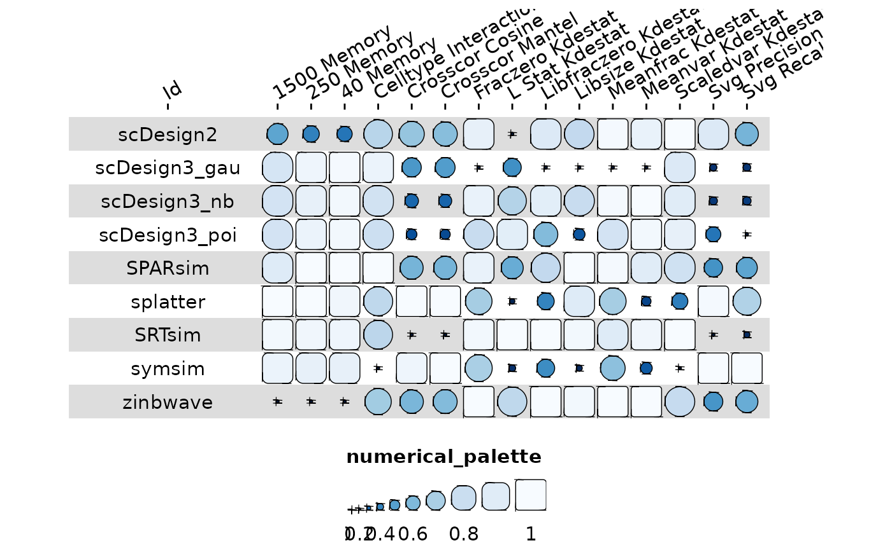
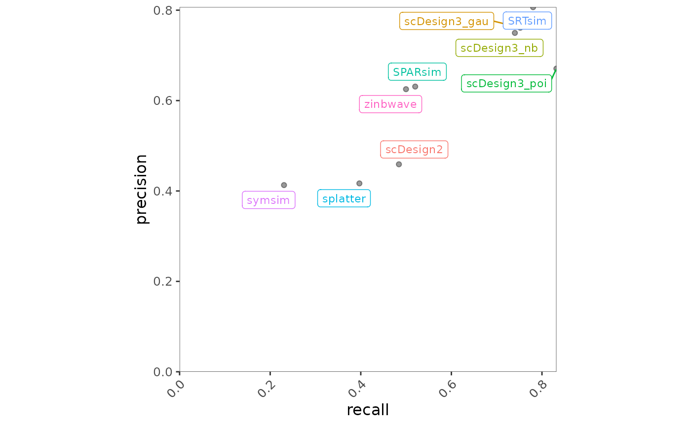
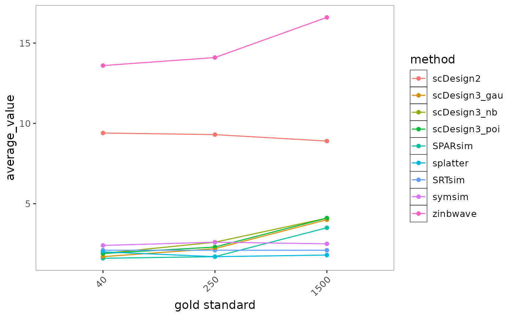
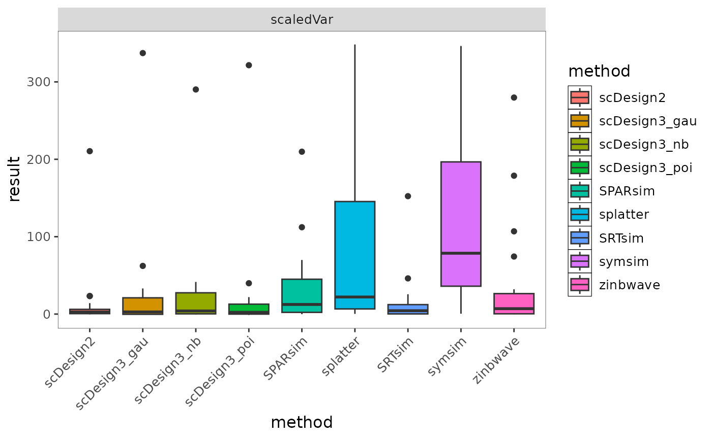

Motivation
BenchHub—an R ecosystem to make benchmarking easier. It organizes evaluation metrics, gold standards(Auxiliary Data), and even provides built-in visualization tools to help interpret results. With BenchHub, researchers can quickly compare new methods, gain insights, and actually trust their benchmarking studies. In this vignette, we are going to introduce benchmarkInsights class.
Creating benchmarkInsights class
benchmarkInsight objects can be created using the
corresponding constructor. For example, if you have a benchmark result
formatted in dataframe, you can create a benchmarkInsight
object as follows. The dataframe includes fixed name columns:
datasetID, method, auxData, metric, result. Here I will use
the benchmark result from SpatialSimBench to create a new object.
benchmarkInsight object can be instantiated using their
respective constructors. For example, if you have a benchmark result
stored as a dataframe, you can create a Trio object as follows. The
dataframe must include the following fixed columns:
datasetID, method, auxData,
metric, and result. Here, I demonstrate this
using benchmark results from SpatialSimBench to initialize a new
object.
result_path <- system.file("extdata", "spatialsimbench_result.csv", package = "BenchHub")
spatialsimbench_result <- read_csv(result_path)
glimpse(spatialsimbench_result)## Rows: 3,861
## Columns: 5
## $ datasetID <chr> "BREAST", "HOSTEOSARCOMA", "HPROSTATE", "MBRAIN", "MCATUMOR"…
## $ method <chr> "scDesign2", "scDesign2", "scDesign2", "scDesign2", "scDesig…
## $ auxData <chr> "scaledVar", "scaledVar", "scaledVar", "scaledVar", "scaledV…
## $ metric <chr> "KDEstat", "KDEstat", "KDEstat", "KDEstat", "KDEstat", "KDEs…
## $ result <dbl> -0.18447837, 3.33680301, 6.95418978, 0.62077112, 0.34212005,…If you use trio$evaluation(), the output will be
automatically formatted as the required dataframe. However, if you use
your own benchmark evaluation results, you ensure they adhere to the
expected format.
bmi <- benchmarkInsights$new(spatialsimbench_result)
bmi## <benchmarkInsights>
## Public:
## addevalSummary: function (additional_evalResult)
## addMetadata: function (metadata)
## clone: function (deep = FALSE)
## evalSummary: spec_tbl_df, tbl_df, tbl, data.frame
## getBoxplot: function (evalResult, metricVariable, auxDataVariable)
## getCorplot: function (evalResult, input_type)
## getForestplot: function (evalResult, input_group, input_model)
## getHeatmap: function (evalSummary)
## getLineplot: function (evalResult, order = NULL, metricVariable)
## getScatterplot: function (evalResult, variables)
## initialize: function (evalResult = NULL)
## metadata: NULLIf you have additional evaluation result, you can use
addevalSummary(). Here is the example:
add_result <- data.frame(
datasetID = rep("BREAST", 13),
method = c("scDesign2", "scDesign3_gau", "scDesign3_nb", "scDesign3_poi",
"SPARsim", "splatter", "SRTsim", "symsim", "zinbwave",
"scDesign3_gau(rf)", "scDesign3_nb(rf)", "scDesign3_poi(rf)", "SRTsim(rf)"),
auxData = rep("svg", 13),
metric = rep("recall", 13),
result = c(0.921940928, 0.957805907, 0.964135021, 0.989451477, 0.774261603,
0.890295359, 0.985232068, 0.067510549, 0.888185654,
0.957805907, 0.964135021, 0.989451477, 0.985232068),
stringsAsFactors = FALSE
)
bmi$addevalSummary(add_result)If you add additional metadata of method, you can use
addMetadata(). Here is the example:
metadata_srtsim <- data.frame(
method = "SRTsim",
year = 2023,
packageVersion = "0.99.6",
parameterSetting = "default",
spatialInfoReq = "No",
DOI = "10.1186/s13059-023-02879-z",
stringsAsFactors = FALSE
)
bmi$addMetadata(metadata_srtsim)Visualization
Available plot
getHeatmap(evalReuslt): Creates a heatmap from the
evaluation summary by averaging results across datasets.
- evalResult: A dataframe containing the evaluation summary.
- Note: In this heatmap, it averages results across datasets.
getCorplot(evalReuslt, input_type): Creates a
correlation plot based on the provided evaluation summary.
- evalResult: A dataframe containing the evaluation summary.
- input_type: either “auxData”, “metric”, or “method”.
getBoxplot(evalReuslt): Creates a boxplot based on the
provided evaluation summary.
- evalReuslt: A dataframe containing the evaluation summary.
- input_type: either “auxData”, “metric”, or “method”.
getForestplot(evalReuslt, input_group, input_model):
Create a forest plot using linear models based on the comparison between
groups in the provided evaluation summary.
- evalReuslt: A dataframe containing the evaluation summary.
- input_group: A string specifying the grouping variable (only “datasetID”, “method”, or “auxData” allowed).
- input_model: A string specifying the model variable (only “datasetID”, “method”, or “auxData” allowed).
getScatterplot(evalReuslt, variables): a scatter plot
for the same auxData, with an two methodd metrics.
- evalReuslt: A dataframe containing the evaluation summary, only include two different metrics, all auxData should be same
- variables: A character vector of length two specifying the metric names to be used for the x and y axes.
getLineplot(evalReuslt, order): Creates a line plot for
the given x and y variables, with an optional grouping and fixed x
order.
- evalReuslt: A dataframe containing the evaluation summary.
- order: An optional vector specifying the order of x-axis values.
Interpretation benchmark result
Case Study: What is the overview of summary?
To get a high-level view of method performance, we use a heatmap to summarize evaluation results across datasets. This helps identify overall trends, making it easier to compare methods and performance differences.
bmi$getHeatmap(bmi$evalSummary)
Case Study: What is the correlation between auxData/metric/method?
To understand the relationships between different evaluation factors, we use a correlation plot to examine how auxData, metrics, and methods are interrelated. This helps identify patterns, redundancies, or dependencies among evaluation components.
bmi$getCorplot(bmi$evalSummary, "method")To further investigate the relationship between two specific metrics, we use a scatter plot. This visualization helps assess how well two metrics align or diverge across different methods, providing insights into trade-offs and performance consistency.
bmi$getScatterplot(bmi$evalSummary, c("recall","precision"))
Case Study: What is the time and memory trend?
To evaluate the scalability of different methods, we use a line plot to visualize trends in computational time and memory usage across different conditions. This helps identify how methods perform as data complexity increases, revealing potential efficiency trade-offs.
bmi$getLineplot(bmi$evalSummary, metricVariable = "memory")
Case Study: Which metric is most effective on the method?
To assess which metrics have the strongest influence on method performance, we use a forest plot to visualize the relationship between metrics and methods. This allows us to quantify and compare the impact of different metrics, helping to identify the most critical evaluation factors.
bmi$getForestplot(bmi$evalSummary, "metric", "method")
Case Study: How does method variability differ across datasets for a specific metric?
To examine the consistency of each method across different datasets for a given metric, we use a boxplot. This visualization helps assess the variability of method performance, highlighting robustness or instability when applied to different datasets.
bmi$getBoxplot(bmi$evalSummary, metricVariable = "KDEstat", auxDataVariable = "scaledVar")
Cheatsheet
| Question | Code |
|---|---|
| Summary Overview | getHeatmap(evalReuslt) |
| Correlation Analysis | getCorplot(evalReuslt, input_type) |
| Scalability Trend (Time/ Memory) | getLineplot(evalReuslt, order) |
| Metric-Model Impact (Modeling) | getForestplot(evalReuslt, input_group, input_model) |
| Method Variability Across Datasets | getBoxplot(evalReuslt) |
| Metric Relationship | getScatterplot(evalReuslt, variables) |
Session Info
## R version 4.4.3 (2025-02-28)
## Platform: x86_64-pc-linux-gnu
## Running under: Ubuntu 24.04.2 LTS
##
## Matrix products: default
## BLAS: /usr/lib/x86_64-linux-gnu/openblas-pthread/libblas.so.3
## LAPACK: /usr/lib/x86_64-linux-gnu/openblas-pthread/libopenblasp-r0.3.26.so; LAPACK version 3.12.0
##
## locale:
## [1] LC_CTYPE=C.UTF-8 LC_NUMERIC=C LC_TIME=C.UTF-8
## [4] LC_COLLATE=C.UTF-8 LC_MONETARY=C.UTF-8 LC_MESSAGES=C.UTF-8
## [7] LC_PAPER=C.UTF-8 LC_NAME=C LC_ADDRESS=C
## [10] LC_TELEPHONE=C LC_MEASUREMENT=C.UTF-8 LC_IDENTIFICATION=C
##
## time zone: UTC
## tzcode source: system (glibc)
##
## attached base packages:
## [1] stats graphics grDevices utils datasets methods base
##
## other attached packages:
## [1] stringr_1.5.1 dplyr_1.1.4 readr_2.1.5 BenchHub_0.0.1
## [5] ggplot2_3.5.1 BiocStyle_2.34.0
##
## loaded via a namespace (and not attached):
## [1] Rdpack_2.6.2 gridExtra_2.3 sandwich_3.1-1
## [4] rlang_1.1.5 magrittr_2.0.3 multcomp_1.4-28
## [7] polspline_1.1.25 compiler_4.4.3 survAUC_1.3-0
## [10] systemfonts_1.2.1 vctrs_0.6.5 reshape2_1.4.4
## [13] quantreg_6.1 crayon_1.5.3 pkgconfig_2.0.3
## [16] fastmap_1.2.0 backports_1.5.0 labeling_0.4.3
## [19] ggstance_0.3.7 rmarkdown_2.29 tzdb_0.4.0
## [22] ragg_1.3.3 bit_4.6.0 MatrixModels_0.5-3
## [25] purrr_1.0.4 xfun_0.51 cachem_1.1.0
## [28] jsonlite_1.9.1 tweenr_2.0.3 parallel_4.4.3
## [31] broom_1.0.7 cluster_2.1.8 R6_2.6.1
## [34] RColorBrewer_1.1-3 bslib_0.9.0 stringi_1.8.4
## [37] rpart_4.1.24 jquerylib_0.1.4 cellranger_1.1.0
## [40] assertthat_0.2.1 Rcpp_1.0.14 bookdown_0.42
## [43] knitr_1.49 zoo_1.8-13 base64enc_0.1-3
## [46] parameters_0.24.2 Matrix_1.7-2 splines_4.4.3
## [49] nnet_7.3-20 tidyselect_1.2.1 rstudioapi_0.17.1
## [52] yaml_2.3.10 codetools_0.2-20 curl_6.2.1
## [55] lattice_0.22-6 tibble_3.2.1 plyr_1.8.9
## [58] withr_3.0.2 bayestestR_0.15.2 evaluate_1.0.3
## [61] foreign_0.8-88 desc_1.4.3 survival_3.8-3
## [64] polyclip_1.10-7 pillar_1.10.1 BiocManager_1.30.25
## [67] checkmate_2.3.2 insight_1.1.0 generics_0.1.3
## [70] vroom_1.6.5 hms_1.1.3 munsell_0.5.1
## [73] scales_1.3.0 glue_1.8.0 rms_7.0-0
## [76] Hmisc_5.2-2 tools_4.4.3 data.table_1.17.0
## [79] SparseM_1.84-2 fs_1.6.5 mvtnorm_1.3-3
## [82] cowplot_1.1.3 grid_4.4.3 tidyr_1.3.1
## [85] rbibutils_2.3 datawizard_1.0.1 colorspace_2.1-1
## [88] nlme_3.1-167 googlesheets4_1.1.1 patchwork_1.3.0
## [91] performance_0.13.0 ggforce_0.4.2 htmlTable_2.4.3
## [94] googledrive_2.1.1 splitTools_1.0.1 Formula_1.2-5
## [97] cli_3.6.4 textshaping_1.0.0 gargle_1.5.2
## [100] funkyheatmap_0.5.1 gtable_0.3.6 ggcorrplot_0.1.4.1
## [103] ggsci_3.2.0 sass_0.4.9 digest_0.6.37
## [106] ggrepel_0.9.6 TH.data_1.1-3 htmlwidgets_1.6.4
## [109] farver_2.1.2 htmltools_0.5.8.1 pkgdown_2.1.1
## [112] lifecycle_1.0.4 bit64_4.6.0-1 dotwhisker_0.8.3
## [115] MASS_7.3-64